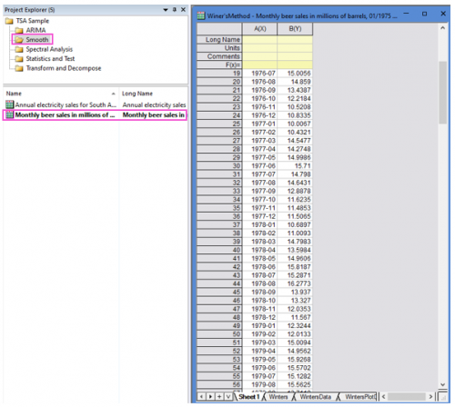
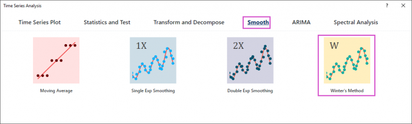
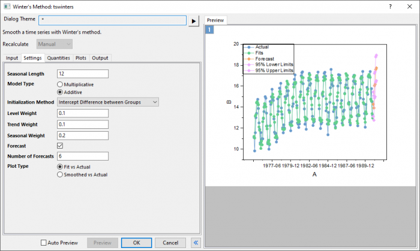
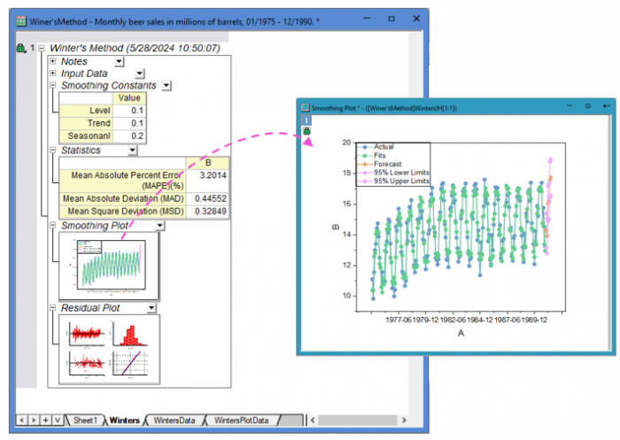

Tutorial for Winter's Method (Smoothing)
TSA-Smooth-Winters-Tutorial
Summary
This Winter's Method tool is supported in the Time Series Analysis App. It is suggested to smooth the time series with seasonality.
Notes for Starting
 |
Topics for Further Reading:
|
Steps in Origin
- Open the sample project file in Origin, go to Folder Smooth using the Project Explorer. Activate the workbook Monthly beer sales in millions of barrels, 01/1975 - 12/1990..

- Highlight column B in worksheet. Click the Time Series Analysis App icon
 in the Apps Gallery window.
in the Apps Gallery window.
- Choose Smooth tab. Click Winter's Method icon to open the dialog.

- In the Setting tab,set Seasonal Length to 12. Choose Multiplicative model type and Intercept Difference between Groups Initializaiton Method. Set level, trend and seasonal weight to 0.1, 0.1 and 0.2 respectively.

- To predict beer sales in the next six months, set Number of Forecasts to 6.
- Click Preview button to display fitted curve with forecasts against actual data.
- Accept all other default settings and click OK button.
